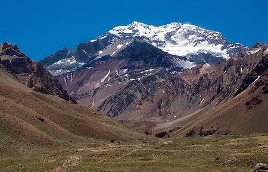
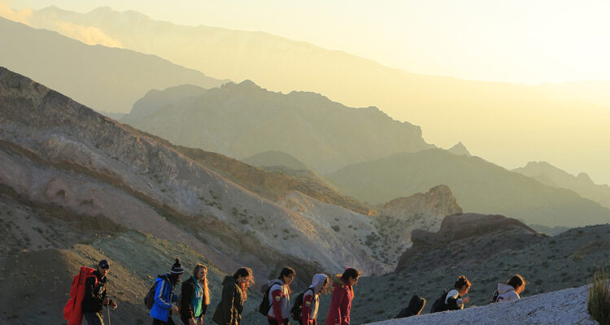

El Aconcagua se ubica en el departamento Las Heras de la provincia de Mendoza —en el noroeste provincial—, al centro-oeste de la República Argentina. Se encuentra dentro del parque provincial Aconcagua. El Aconcagua es la cumbre más alta de los hemisferios sur y occidental; también es la montaña más elevada de la Tierra entre las situadas fuera del sistema de los Himalayas. Posee dos picos principales: la cumbre norte, de 6960 m s. n. m. (metros sobre el nivel del mar), y la cumbre sur, de 6930 msnm. Durante décadas, figuró en las publicaciones la altura de 6955 m nm. y posteriormente la de 6965 msnm. En este sector de la frontera de Argentina y Chile el límite entre los dos países se establece por la línea de divisorias de aguas y los cerros Catedral y Tolosa impiden que los deshielos que nacen en el Aconcagua se encaminen hacia el océano Pacífico, siendo tributarios del Atlántico. Además las aguas de estos dos últimos cerros tampoco van al Pacífico, por lo que la frontera corre a 14 km (kilómetros) hacia el occidente del Aconcagua, hasta el cerro Caracoles, sobre el Cordón de los Dedos, dejando al Aconcagua enteramente en territorio argentino. Al norte y al este limita con el valle de las Vacas y al oeste y al sur con el valle de los Horcones inferior. Varios glaciares atraviesan sus laderas; los más importantes son el glaciar Nororiental o Polaco y el del Este o Inglés.
El volcán Tupungato (voz huarpe: 'mirador de estrellas') es un domo volcánico ubicado en la cordillera de los Andes, en la frontera de la Argentina y Chile. Es el monte más alto al Sur del Aconcagua, décimo en altura de Argentina, ganando así el privilegio de ser uno de los más altos de Sudamérica. Métodos precisos de medición han arrojado una altitud de 6570 msnm. Es la montaña más alta de los Andes al sur del Aconcagua y domina los alrededores con su enorme tamaño y representativo cono sobrepasando por muchos metros las cumbres vecinas. Es considerado geológicamente un volcán extinto del pleistoceno, aunque el volcán holocénico Tupungatito, situado inmediatamente al suroeste y con el que a veces se lo confunde, se encuentra en estado de actividad con al menos dieciocho erupciones registradas desde 1829, las últimas de las cuales fueron emisiones suaves de ceniza en 1980 y 1986.
El cerro El Plomo es una montaña ubicada en la Región Metropolitana de Santiago. Con una altitud de 5424 msnm, es el punto más alto visible desde la ciudad de Santiago de Chile. El 1 de septiembre de 1998 fue incluido dentro del listado tentativo de bienes que podrían ser considerados para una potencial nominación a Patrimonio de la Humanidad por la UNESCO.
El Nevado de Piuquenes o Mesón de San Juan es una montaña glaciarizada ubicada en el límite entre la provincia de Mendoza, Argentina, y la Región Metropolitana de Santiago, Chile. Ubicado en el centro de los Andes centrales chilenoargentinos y es uno de los cordones montañosos más grandes del centro sur de Chile (con 6019 metros de altura).1 El Nevado de Piuquenes es uno de los seis más grandes de la Cordillera de los Andes. La mayoría de la montaña (aproximadamente el 70%) esta cubierta por glaciares que alimentan numerosas cuencas de ríos adyacentes a la montaña. Su origen es volcánico su centro de erupción esta aproximadamente a 10 kilómetros de la cima de la montaña.
El cerro Juncal o Nevado Juncal es un cerro de los Andes Centrales con una altitud de 5953 msnm. Se encuentra ubicado en la frontera de Argentina (Provincia de Mendoza) y Chile (límite entre las regiones de Valparaíso y Metropolitana), en cuyo territorio se encuentra la cumbre. En sus faldas se encuentran los glaciales Glaciar Juncal Sur|Juncal Sur y Juncal Norte, Colgante norte, que entre otros, alimentan a los ríos Juncal y Olivares.
El Tupungatito es un volcán activo que se sitúa en la cordillera de los Andes cuya altitud es de 5600msnm, en la frontera de Argentina (Provincia de Mendoza) y Chile (Región Metropolitana de Santiago) a 8 km al sudoeste del volcán Tupungato. Sus últimas erupciones fueron fechadas en 1959, 1960, 1964, 1980 y 1986.
El cerro Tunduqueral es un cerro ubicado en el valle de Uspallata con una altitud de 2004 msnm, provincia de Mendoza, Argentina. Se considera un lugar sagrado por los antiguos habitantes de pueblos originarios, quienes realizaban rituales, dejando registros en forma de petroglifos. Fue para la cultura Huarpe un lugar donde se realizaban ceremonias, peticiones y agradecimientos a sus tres dioses: el sol, la tierra y el aire. Allí también las mujeres celebraban rituales femeninos.
El Sosneado es una cumbre de Los Andes argentinos, ubicada en el departamento San Rafael, en la provincia de Mendoza. Con una altura de 5.169 msnm, es la montaña de más de 5.000 msnm más austral de la Cordillera de los Andes ya que el cerro Risco Plateado ubicado más al sur, dentro del departamento de Malargüe mide 4.999 msnm. Íntegramente en territorio argentino, de su ladera sur, nace el río Atuel, uno de los principales ríos de la provincia. En sus cercanías, se encuentra el cerro Seler, lugar donde se estrelló el avión de la Fuerza Aérea Uruguaya con jugadores de rugby del equipo Old Christian en el año 1972, hecho conocido como "Milagro de los Andes".
El cerro de la Gloria, también denominado cerro del Pilar, es una elevación localizada en la ciudad de Mendoza, provincia de Mendoza. El Poder Ejecutivo decretó el cambio de nombre del cerro del Pilar por cerro de la Gloria el 30 de enero de 1913. Se puede acceder a la cima por senderos peatonales (existen algunos accesos de rampas para personas con discapacidad), o en automóvil por caminos pavimentados (diferenciados de subida y bajada) con múltiples miradores. A pocos metros del monumento hay un estacionamiento para unos 40 automóviles (micros también están permitidos). También hay un puesto policial e instalaciones sanitarias.